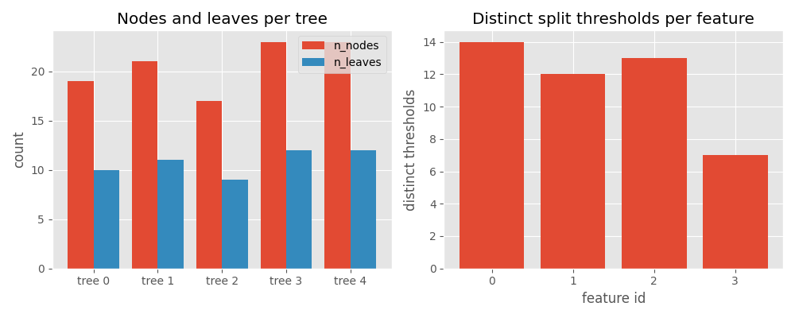

Note
Go to the end to download the full example code.
Tree-Ensemble Statistics#
stats_tree_ensemble() computes per-tree and per-feature
statistics for TreeEnsembleClassifier and TreeEnsembleRegressor ONNX
nodes (from the ai.onnx.ml domain).
The function returns a NodeStatistics instance
containing:
global counts — number of trees, features, outputs, split modes, …
per-feature threshold distributions (
HistTreeStatistics)per-tree structure summaries (
TreeStatistics)
enumerate_stats_nodes() walks a full
ModelProto and yields statistics for every matching node
in one call, which is convenient for exploring real-world models built from
scikit-learn RandomForestClassifier or similar estimators.
1. Train a scikit-learn RandomForestClassifier on dummy data#
We generate a small binary-classification dataset with four features and train a five-tree random forest with depth ≤ 4.
import numpy as np
from sklearn.ensemble import RandomForestClassifier
rng = np.random.default_rng(0)
X_train = rng.standard_normal((200, 4)).astype(np.float32)
y_train = (X_train[:, 0] + X_train[:, 2] > 0).astype(int)
clf = RandomForestClassifier(n_estimators=5, max_depth=4, random_state=0)
clf.fit(X_train, y_train)
print(
f"Trained RandomForestClassifier: {clf.n_estimators} trees, "
f"{clf.n_features_in_} features, classes={list(clf.classes_)}"
)
Trained RandomForestClassifier: 5 trees, 4 features, classes=[np.int64(0), np.int64(1)]
2. Convert to ONNX with yobx.sklearn.to_onnx#
yobx.sklearn.to_onnx() converts the estimator and returns an
ExportArtifact. The .proto attribute gives
the ModelProto containing a TreeEnsembleClassifier node
in the ai.onnx.ml domain — the operator supported by
stats_tree_ensemble().
from yobx.sklearn import to_onnx # noqa: E402
artifact = to_onnx(clf, (X_train,), target_opset={"": 20, "ai.onnx.ml": 3})
model = artifact.proto
print("Graph nodes:", [(n.op_type, n.domain) for n in model.graph.node])
Graph nodes: [('TreeEnsembleClassifier', 'ai.onnx.ml')]
3. Compute statistics for the tree-ensemble node#
enumerate_stats_nodes() walks the model graph and
returns a NodeStatistics for every
TreeEnsembleClassifier / TreeEnsembleRegressor it encounters.
from yobx.helpers import enumerate_stats_nodes # noqa: E402
# Collect results from the full model walk
all_stats = list(enumerate_stats_nodes(model))
print(f"\nNumber of tree-ensemble nodes found: {len(all_stats)}")
# For the single classifier node, inspect the statistics directly
_path, _parent, stats = all_stats[0]
print("kind :", stats["kind"])
print("n_trees :", stats["n_trees"])
print("n_outputs :", stats["n_outputs"])
print("n_features:", stats["n_features"])
print("n_rules :", stats["n_rules"])
print("rules :", stats["rules"])
print("hist_rules:", stats["hist_rules"])
Number of tree-ensemble nodes found: 1
kind : Classifier
n_trees : 5
n_outputs : 2
n_features: 4
n_rules : 2
rules : {np.str_('LEAF'), np.str_('BRANCH_LEQ')}
hist_rules: Counter({np.str_('LEAF'): 54, np.str_('BRANCH_LEQ'): 49})
4. Per-tree breakdown#
The "trees" key holds a TreeStatistics object
for each tree in the ensemble.
print(f"\nPer-tree statistics ({stats['n_trees']} trees):")
for tr in stats["trees"]:
row = tr.dict_values
print(
f" tree {tr.tree_id}:"
f" n_nodes={row['n_nodes']}"
f" n_leaves={row['n_leaves']}"
f" n_features={row['n_features']}"
)
Per-tree statistics (5 trees):
tree 0: n_nodes=19 n_leaves=10 n_features=3
tree 1: n_nodes=21 n_leaves=11 n_features=4
tree 2: n_nodes=17 n_leaves=9 n_features=3
tree 3: n_nodes=23 n_leaves=12 n_features=3
tree 4: n_nodes=23 n_leaves=12 n_features=4
5. Per-feature threshold distribution#
For each input feature that appears as a split condition,
HistTreeStatistics stores the distribution of
threshold values used across all trees.
Per-feature threshold statistics (4 features):
feature 0: min=-1.268 max=1.492 mean=0.025 n_distinct=14
feature 1: min=-0.942 max=1.756 mean=0.597 n_distinct=12
feature 2: min=-1.702 max=1.192 mean=-0.052 n_distinct=13
feature 3: min=-1.688 max=2.250 mean=0.374 n_distinct=7
6. Flat dictionary for DataFrame integration#
dict_values() flattens all scalar
statistics into a single dict suitable for creating a pandas DataFrame row.
Flat stats dict:
hist_rules__BRANCH_LEQ: 49
hist_rules__LEAF: 54
kind: Classifier
max_featureid: 3
n_features: 4
n_outputs: 2
n_rules: 2
n_trees: 5
rules: BRANCH_LEQ,LEAF
7. Visualize tree statistics with matplotlib#
Plot per-tree node/leaf counts and per-feature split counts side by side.
import matplotlib.pyplot as plt # noqa: E402
fig, (ax1, ax2) = plt.subplots(1, 2, figsize=(10, 4))
# --- left panel: nodes and leaves per tree ---
tree_ids = [tr.tree_id for tr in stats["trees"]]
n_nodes = [tr["n_nodes"] for tr in stats["trees"]]
n_leaves = [tr["n_leaves"] for tr in stats["trees"]]
x = range(len(tree_ids))
ax1.bar([i - 0.2 for i in x], n_nodes, width=0.4, label="n_nodes")
ax1.bar([i + 0.2 for i in x], n_leaves, width=0.4, label="n_leaves")
ax1.set_xticks(list(x))
ax1.set_xticklabels([f"tree {t}" for t in tree_ids])
ax1.set_ylabel("count")
ax1.set_title("Nodes and leaves per tree")
ax1.legend()
# --- right panel: number of split thresholds per feature ---
feat_ids = [f.featureid for f in stats["features"]]
n_splits = [f["n_distinct"] for f in stats["features"]]
ax2.bar(feat_ids, n_splits)
ax2.set_xlabel("feature id")
ax2.set_ylabel("distinct thresholds")
ax2.set_title("Distinct split thresholds per feature")
ax2.set_xticks(feat_ids)
fig.tight_layout()
plt.show()

Total running time of the script: (0 minutes 8.253 seconds)
Related examples

Computation Cost: How It Works and Supported Operator Formulas